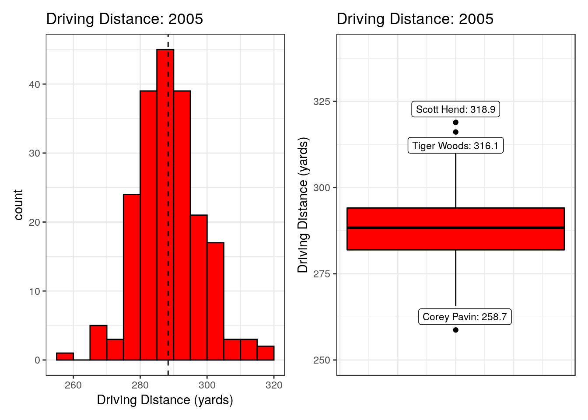
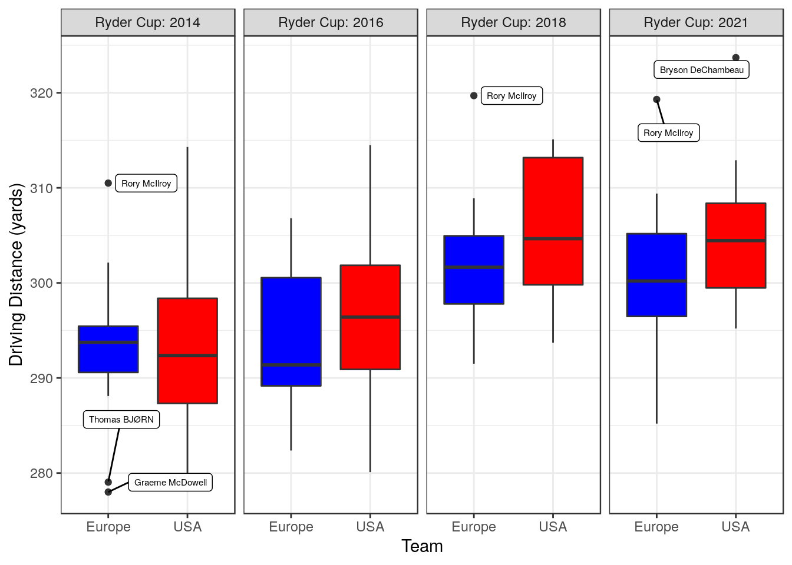
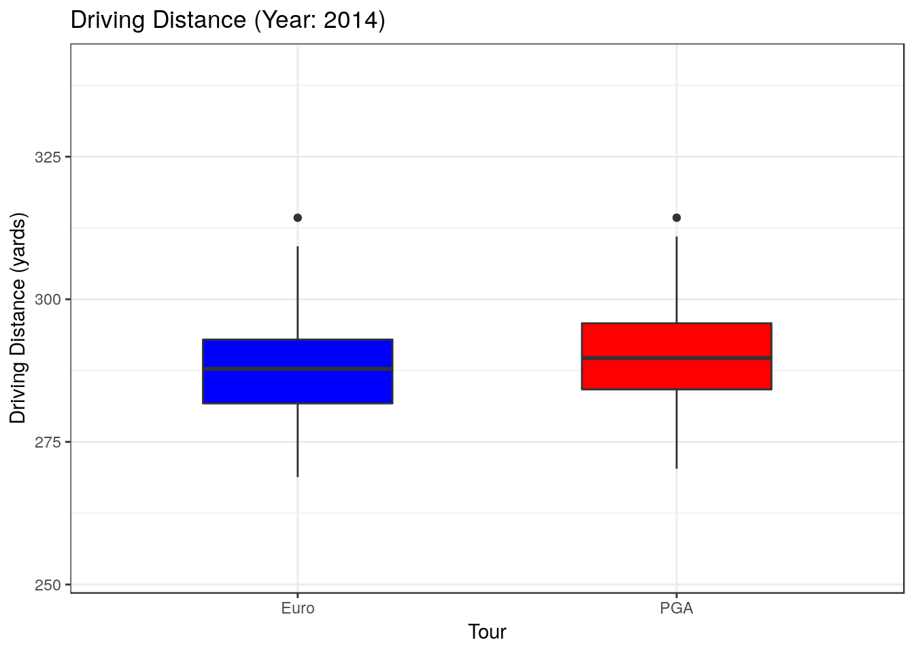
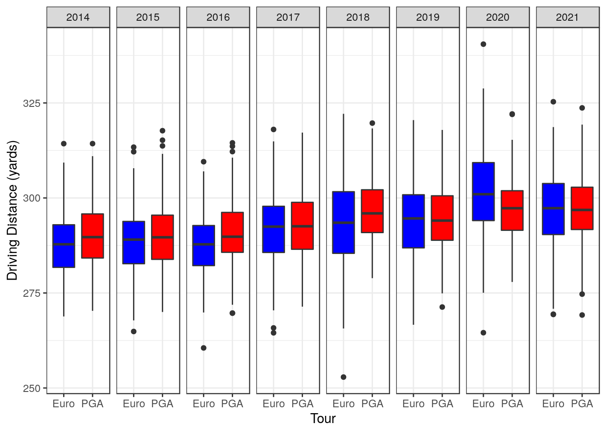

Ryder Cup Post-Mortem
Ryder Cup 2021 Post-Mortem
The Ryder Cup, which took place last month at Whistling Straits in the state of Wisconsin, resulted in a dominant victory for the USA team on a scoreline of 19-9. One thing that struck me during the week was the ability of the USA team to take advantage of some of the risk-reward holes at Whistling Straits. To what extent were the European team outgunned by their more powerful USA counterparts? Some average driving distance data will be considered to explore the differences between the respective teams.
In keeping with Ryder Cup traditions, we will judge the results by how much red or blue appears in the graphics. So sit back, put on Promise Me by Jerry Goldsmith, and imagine the old dulcet tones of David Livingstone “handing it back” to Ewen Murray in the commentary box while Butch stares down the barrel of the camera with a gaze that pierces your soul.
Boxplots overview.
As this analysis uses a lot of boxplots, I thought it would be useful to give a brief rundown of what they are for anyone that is unfamiliar with them.
As an illustrative example, I have used the average driving distance stats from the PGA Tour in 2005. The left plot shown below is a histogram, where driving distance is split into bins of 5 yards, from 255-320 yards, and the number of players in each bin is shown by the height of the bar. The black dashed line represents the median driving distance (288.4 yards), which means that 50% of the players hit it longer than 288.4 yards and 50% of the players have an average driving distance of less than that. Also you can see that the most common driving distance is in the 285-290 yard bin, with average drives exceeding 300 yards being relatively rare.

All this data can be displayed in a more compact fashion using a boxplot, which is shown on the right above. This is representing the exact same data, average driving distance from 2005, just in a different format. These are also sometimes known as a “box and whisker plot”, referring to the two distinctive features of the graph. The bold black line in the centre of the box represents the median driving distance, just like the dashed black line in the histogram (288.4 yards). The bottom and top of the red box represents the 25th and 75th percentiles respectively (281.9 and 294.1 yards). This means that 50% of the players on the PGA Tour in 2005 hit it on average between 281.9 and 294.1 yards off the tee, while 25% hit it further than 294.1 and shorter than 281.9. The difference between the 25th and 75th percentile is called the inter-quartile range (IQR) and this is used to work out the length of the “whisker”. The whisker length goes as far as either the maximum/minimum value in your data or 1.5 times the IQR, whichever value is shorter. So in the example below, both whiskers are 1.5 times the IQR, because there are “outliers” which are very far away from the average (shown as black dots and labeled). There are two who had exceptionally long driving stats that year (Scott Hend and Tiger Woods). Meanwhile Corey Pavin was the shortest on tour with an average of 258.7 yards.
Boxplots will be used for the remainder of the article to discuss differences in the driving distances of the Ryder Cup teams in recent years. Also this 2005 data is a handy reference point for seeing how far driving distances have improved in the last 16 years.
Ryder Cups (2014-2021)
In the plot below, the composition of the different teams for the last four Ryder Cups are represented by boxplots of average driving distance. In each case, the home team were victorious.

The European team of 2014 was an interesting example where most of the team were tightly packed in the mid-low 290s. The European team had a higher median driving distance than the Americans, the only time this has occurred in the years considered. The outliers for Europe were the short hitting of Thomas Bjorn and G-Mac, while Rory McIlroy provided his customary pop as Europe came away with the victory at Gleneagles.

In 2016, the value of the 75th percentile (top of blue box) increased for Europe, due to the fact that Justin Rose and Sergio Garcia had tacked on some extra yardage and also the addition of Thomas Pieters to the team. But the USA team increased in a similar fashion and they took home the trophy at Hazeltine.
The most notable shift however has happened in the USA team for the last two editions. The median driving distances of the U.S. team (thick black line in red box) increased to 305 and 304 yards respectively, i.e. half the American team had an average driving distance in excess of 304 yards. The Americans were not able to bludgeon the European team on the tight fairways at Le Golf National, and the European team came out on top with a convincing victory. That gulf in power was still evident last month at Whistling Straits, where the European team’s 75th percentile of driving distance (305 yards) was just 1 yard longer than the median of the USA team. That means that where the European team had 3 players who could hit it further than 305 yards on average, the Americans had 6 such players. Furthermore, the minimum driving distance in the USA team was 295 yards (bottom of lower whisker) which is greater than the median driving distance of the USA team in 2014. A remarkable progression in just 7 years. On a course like Whistling Straits, this clearly proved extremely advantageous.
This is not to be interpreted in any way as a slight against Whistling Straits. It is a spectacular setting, with many challenging holes and is a worthy major championship venue. But it does have quite a few risk-reward short par 4s that could be attacked and having power was also an advantage for the very tricky long par 3 17th. Furthermore, the last two times it has hosted the PGA Championship, 2010 and 2015, the top 10s have been full of big hitters such as Jason Day (winner in 2015), Bubba Watson (lost in a playoff in 2010), Rory McIlroy, Brooks Koepka, Tony Finau, George Coetzee, Branden Grace and, of course, Dustin Johnson, with his infamous trip into the “fairway bunker” on the 72nd hole in 2010.
Whistling Straits is a golf course that rewards long hitters and the USA are perfectly entitled to choose a course which is tailor made to suit their players. But that begs a question, do players just hit it further on the PGA Tour comapared to the European Tour? Is this an inherent advantage for players on PGA Tour?
Tour comparison
To examine differences in the respective tours, data for all players from both tours were considered. Below in an animation of boxplots for both the PGA and European tours for all years from 2014-2021.

While the animation looks very fancy, it is probably more informative to view all 8 years side by side. The PGA tour did seem to have a marginal advantage in the earlier years, but certainly since 2018 they have been extremely similar. The European Tour did have longer hitting than the PGA tour in 2020, but I think that was more an artifact of the interruption of the pandemic and the re-jigged calendar.

All in all, there isn’t a substantial difference between driving distances on the respective tours nowadays. Both tours are showing an increasing trend in driving distance, with median driving distances getting ever closer to 300 yards; a testament to the advances in driver technology and player fitness in the 16 years since 2005, when the median driving distance was below 290 yards (shown earlier). It appears that the most successful Americans turn out to be longer hitters, relative to their competion, than the most successful Europeans. Whether that is a product of the courses that they play on in the PGA Tour or something different entirely is not something that I am looking to speculate on. I am merely presenting the data.
Conclusions
Some commentators have indicated that some of this year’s result could be attributed to the performance of Pádraig Harrington as captain. At the end of the day Europe came up against an exceptionally strong USA team this time around, with ten of the top thirteen players in the OWGR at the time of the event. They also had a distinct advantage in terms of power, and the match was played at a course which seems to favour such attributes.
The unfortunate thing for Europe is that their premier long hitter in Rory McIlroy had an off week at the event, which can happen to any golfer, and he clearly felt the weight of it all by Sunday. Hindsight is a wonderful thing, but if one was to question any of the captain’s decisions then maybe it would be the selection of Ian Poulter as one of the wildcards. Without a doubt “The Postman” is a living legend of the Ryder Cup and not selecting him would have been a controversial decision. That being said, his 2021 driving stats placed him as the shortest member of the European team, with an average driving distance of 285.2 yards. It would have taken a brave man to choose one of the inexperienced Victor Perez, Robert MacIntyre, Guido Migliozzi or Thomas Detry instead of Poulter on the basis of “horses for courses”. That would never have happened in reality but it’s an interesting hypothetical consideration.
Will this be the deciding factor of Ryder Cups to come, where course choice/setup will have a large influence? Well the recent Italian Open, held at the 2023 venue in Rome, was won by one of the bombing Højgaard twins from Denmark. So perhaps the upward trend in driving distances on both tours might mean that the gap between the USA and European teams might narrow over time? One would hope so, because the 2025 Ryder Cup will be held at Bethpage Black. It is another very difficult major championship caliber golf course, but one where Brooks Koepka and Dustin Johnson finished first and second at the 2019 PGA Championship, well clear of the rest of the field. And it had a top 10 that also included: Rory McIlroy, Adam Scott, Gary Woodland, Matt Wallace, Luke List and Erik Van Rooyen; so it would indicate that it is a course which also favours players with power.
Or perhaps in the intervening years the new found friendship between Brooks and Bryson will go spectacularly up in flames, with a public betrayal and bitter feud ensuing. Naturally the only way to resolve it would be a tag team match between Brooks & DJ against DeChambeau & Patrick Reed at Summer Slam just before the Ryder Cup, ruling them all ineligible for the event.

Might seem far-fetched, but we all can dream.
Produced by Aimsir Spóirt
(generated using R Markdown)